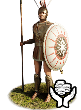
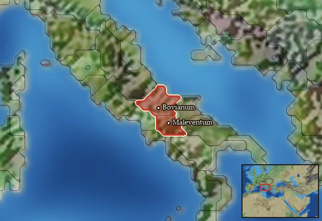

Samnite Hoplites

Class: spearmen · Category: infantry · Men per unit: 40
Description
Samnite Hoplites are a hardy warrior elite. Well-used to waging war as well as raiding enemies, these men have accrued great experience and wealth over time. This means that they have been able to afford the finest arms and armour, including bronze helmets of the Chalcidian, Samno-Attic, or Montefortino types, greaves, linothrakes or metal cuirasses, and aspis shields. Combining the lethal effectiveness of the Samnites with Greek military doctrine, these hoplites have become a powerful unit in their own right. They were noted by their enemies as a “Samnite phalanx that was equipped with oblong shields” (Dion. Hal. XX.1.5).
Historical background
For a people often misconstrued as barbarous mountain folk, the Samnites had both a capable war machine and quite advanced social institutions. These were shaped by the rugged terrain they lived upon, however, and adapted accordingly. The poor soil of most of their homeland meant that the Samnites had to rely on taking what they could not produce themselves, hence the need to regularly raid and expand their territory wherever possible (Salmon, Samnium and the Samnites (1967), p. 19). In political terms, the Samnite tribes remained fairly simple, that is, until the Roman conquest at the beginning of the 3rd century BC: each formed a political unit out of several pagi (pagus), which in turn comprised vici (vicus), oppida (oppidum), and castella (castellum). The Samnites name for their overarching political body was a touto (in Umbrian touta) (Cornell, s.v. ‘The conquest of Italy’ in: The Cambridge Ancient History, Volume VII.2 (2006), pp. 354-6).
They also lived rather simply, with Samnite society having a rural village character (Liv. 9,13,7; Str. 5,4,12), but these were not the shanties and shacks that image might conjure. Instead, there is evidence of considerably sturdier structures: houses of stone, with tiled roofs. Material remains were found for the most part on the slopes of the valley, and this position, coupled with analysis of animal and plant remains suggested that, even in the higher parts of the valley, mixed farming was widely practised (Dench, From Barbarians to New Men (1995), pp. 7-8).
Even Samnite-led invasions, at times, showed more subtlety than just an angry horde of roaring barbarian troglodytes setting everything ablaze. For example, in Capua, the Samnites managed to infiltrate and gradually take over the city after being grudgingly admitted, eventually causing a violent coup that saw the Etruscan rulers toppled overnight (Cornell, s.v. ‘Rome and Latium to 390 B.C.’ in: The Cambridge Ancient History, Volume VII.2 (2006), p. 285). As Livy puts it, “the newcomers fell upon them [the Etruscans] in the night and slew them” (Liv. 4.37.2).
The Samnites were also fairly diplomatically astute, as they maintained tribal unity in the face of their enemies – especially those odious and treacherous Romans. Their ties were with other Samnite groups rather than with Oscan-speakers in general, and they formed an alliance known as the Samnite League (civitas Samnitium: Liv. 8.23.6). This represented all four tribes: the Caudini, Hirpini, Pentri (Liv. 9.31.4, 22.61.11, 23.42.1; cf. Strab. 5.4.12), and Caraceni (Zonar. 8.5), with the possible, occasional addition of the politically autonomous and distant Frentani (Strab. 5.4.2; Ps.Skylax 15; cf. Polyb. 2.24.12; Liv. 9.45.16). This union was generally only one of military expedience rather than a true political confederation, but served the Samnites well. The members of the Samnite League operated from or against places explicitly said to have belonged to other peoples, including the Volsci (Fregella: Liv. VIII.23.6; Sora: X.1.1), the Etruscan Campanians (Capua: IV.37.1), and the Apulians (VIII.25.3). They also required and developed the ability to attack fortifications, which they demonstrated against Rome, for instance, at Plistica in 315 BC (Liv. IX.22) and at Sora and Calatia in 306 BC (Liv. IX.43; Diod. XX.80). Although they trapped a Roman army in the famous ambush at the Caudine Forks (321 BC) and attempted similar manoeuvres on several occasions, the Samnites also won pitched battles. They developed on their own terms and even formed rudimentary elements of industry, which would prove a boon in their wars against Rome, and is further evidence of a more dynamic, sophisticated, and vibrant society than was earlier assumed (Fields et al., Caudine Forks 321 BC (2020), p. 18).
The archaeological basis for the equipment of these Samnite Hoplites is much the same as that of the Oscan Hoplites, so we refer to that description for further details. The historical basis for the Samnites having hoplites at all is different, though, as they are mentioned directly and alluded to in several cases. Livy (10. 38. 12) mentions that a Samnite army was well-equipped with “splendid arms and crested helmets”. Dionysios of Halikarnassos described the Samnites as part of a great army under King Pyrrhos, as key part of his army’s left flank alongside Greek mercenaries: “The Aitolians, Akarnanians and Athamanians – and the Samnite phalanx that was equipped with oblong shields” (Dion. Hal. XX.1.5). As mentioned above, the Samnites had fought various Greeks, and even the Romans had hoplites before their reforms, so a hoplite phalanx was certainly no rare sight on the Italian peninsula. Hoplite warfare and the requisite panoply was likely imported from Greece around the 7th century BC, although none appeared in local tombs or burials until the 6th century BC (Burns, The Cultural and Military Significance (2005), p. 149). The hoplite spear was a bit of a departure from the normal javelins and dual-use spears the Samnites often used, as it had a smaller thrusting head (Burns, (2005), p. 182). The Samnite Hoplites used their wealth to buy the finest protection available, and wanted to look good doing so, as ‘‘a race which, if you would know its wealth, was clad, even to the point of ostentation, in gold and silver armour and motley coloured raiment’’ (Florus I.XI.7). In fact, most of the burial site findings of hoplite panoply in Italy have revealed that “finds on native sites continue to outnumber those from Greek ones”, as the Greeks rarely buried their dead with arms and armour, thus highlighting the adoption of hoplite warfare for Italic peoples and the Samnites (Snodgrass, Arms and Armour of the Greeks (1999), p. 76; Burns (2005), p. 236).
Stats
| Rank in roster | ||
|---|---|---|
| Men per unit | 40 | ███······· 30% |
| Attack | 12 | █████····· 47% |
| Charge bonus | 15 | ██████···· 60% |
| Defence | 40 | ████████·· 75% |
| · armour | 9 | █████····· 50% |
| · defence skill | 26 | ████████·· 79% |
| · shield | 5 | ██████···· 56% |
| Morale | 11 | ████······ 39% |
| Discipline | Impetuous (may charge without orders) | |
| Training | Highly trained | |
| Recruitment cost | 1,640 dn | ███······· 26% |
| Upkeep per turn | 600 dn | ████······ 39% |
| Turns to recruit | 3 |
Weapons
| Primary | Secondary | Primary | Secondary | Primary | Secondary | Primary | Secondary | ||||
|---|---|---|---|---|---|---|---|---|---|---|---|
| Attack | 12 | 10 | Type | thrown · blade | melee · blade | Projectile | pilum_early | — | Ammunition | 2 | — |
| Charge bonus | 15 | 15 | Damage | piercing | piercing | Range | 40 | — | Properties | Armour-piercing (counts only half the target's armour) · used just before charging into combat | Light spear (braced against cavalry charges from the front) · +8 attack against cavalry |
Defence
| Primary | Secondary | Primary | Secondary | Primary | Secondary | Primary | Secondary | ||||
|---|---|---|---|---|---|---|---|---|---|---|---|
| Total | 40 | — | Armour | 9 | — | Defence skill | 26 | — | Shield | 5 | — |
Condition and terrain
| Hit points | 1 | Ground: scrub / sand / forest / snow | -1 / -1 / -4 / -1 | Charge distance | 30 | Formations | Square |
Technical stats
| Time between blows (primary / secondary) | 2.5 s / 2.5 s | Collision mass per man (1.0 is normal) | 1.22 | Spacing between men: close / loose | 1 × 1.05 m / 2 × 2.4 m | Default ranks | 5 |
| Extra fatigue in hot climates | 2 |
In battle: Can sap · Good stamina
Who can recruit it
A core roster unit for one faction, which can raise it anywhere it holds the right building:
Any faction holding one of the provinces below can field it.
Exactly what a settlement must have, route by route (3)
| For | Building | Also requires | For | Building | Also requires | For | Building | Also requires | |||
|---|---|---|---|---|---|---|---|---|---|---|---|
| Samnites | Direct Rule | Tier 2 Military Industrial Complex · Tier 2 Colony | Samnites | Homeland | Garrison Building or Tier 1 Military Industrial Complex | Every faction except Samnites (area-of-recruitment unit) | Any settlement | Tier 2 Military Industrial Complex · Samnite area of recruitment · Dependency or Indirect Rule · Tier 1 Colony not built |
Areas of recruitment

| Zone | Provinces | ||||||
|---|---|---|---|---|---|---|---|
| Samnite | 2 |